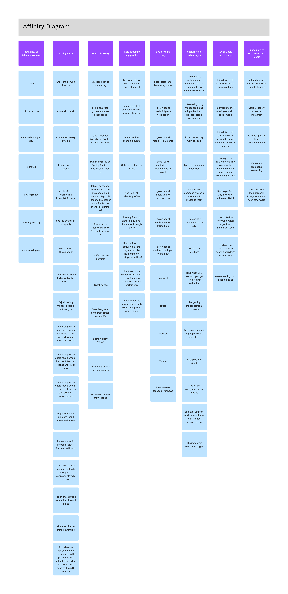
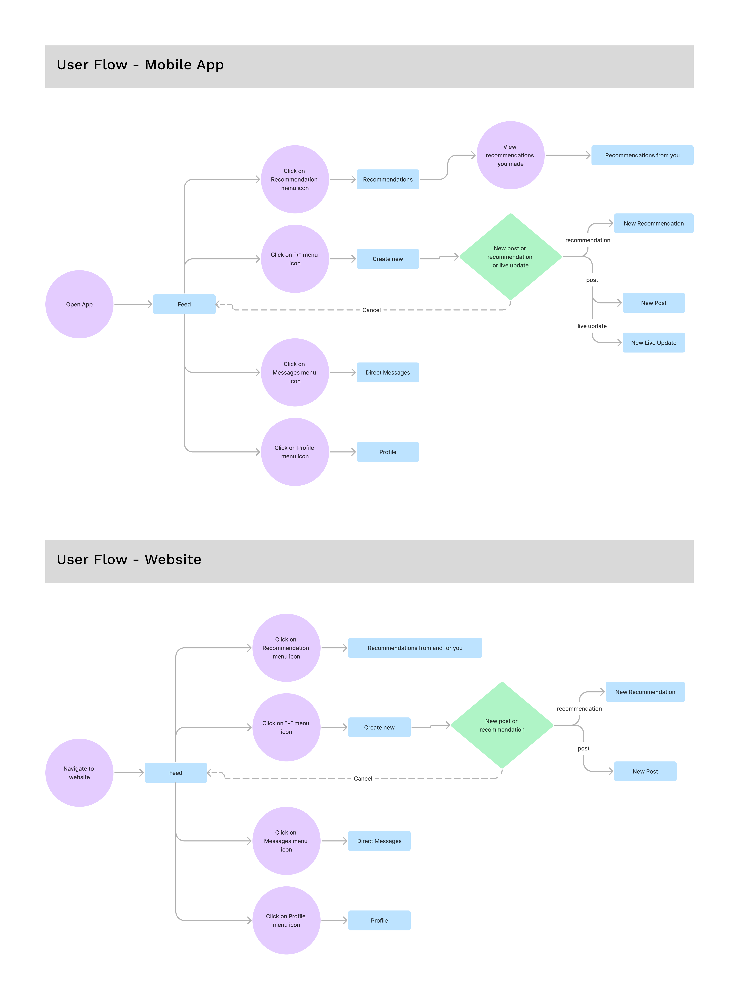
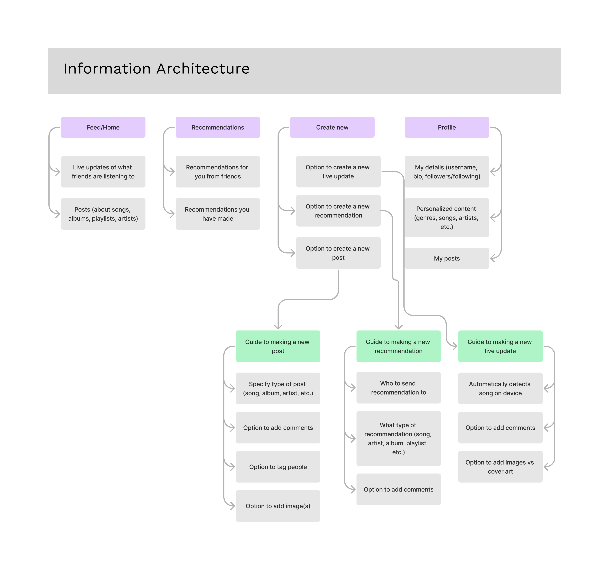

Listen - Social Media for Music
I have designed the UX/UI for a social media app for music.
The app is meant to serve as a social media platform for avid music listeners to better share music.
The target user group is frequent music listeners, aged between 18-35.
My insipration for the app stemmed from music being a great source of connection and sharing amongst people, and recognizing that social media acts as a platform to aid in human connection, thus making the two a suitable pair.
To validate the app and learn more about the target user, I performed user interviews and used the knowledge gained to map out an affinity diagram.
From there I was able to ideate on key features of the app, and create user flow and information architecture diagrams. Results from my user research can be found by scrolling down this page.
The significant features I wireframed include the home page, a page where users can receive music recommendations, as well as screens for creating a new post, live music update, and recommendation. Final versions of the wireframes and high fidelity prototype are shown below.

Organized mappings and illustrations of the user research I completed are shown below in the following affinity diagram, user flows, and information architecture diagram.
  Additional versions of the wireframes can be found below.